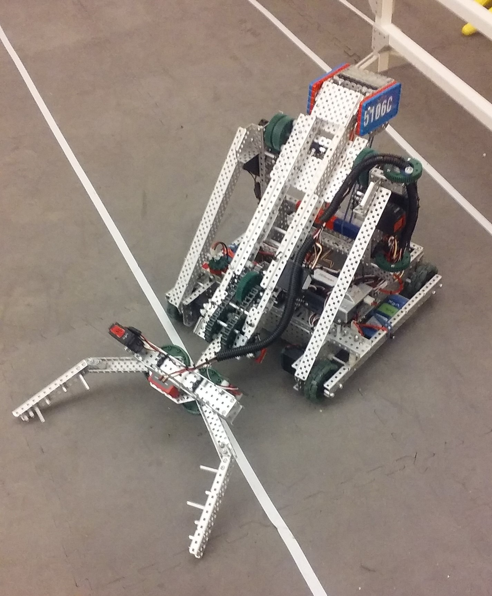
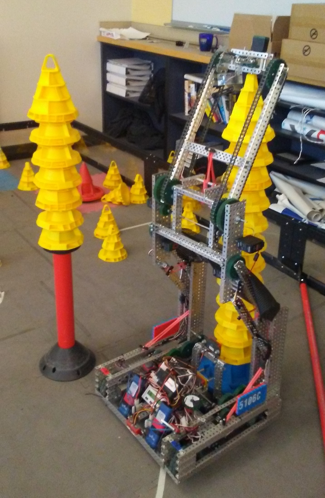
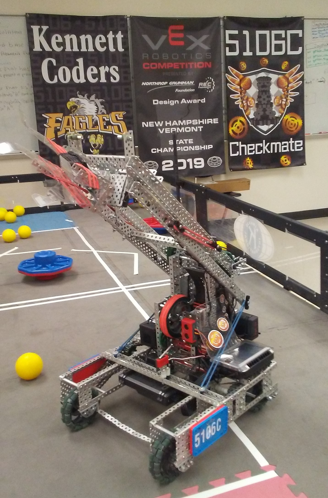

Ever since freshman year, my friend and I have been on the Kennett Coders robotics team 5106C. Because we're a team of two, we have a lot of work split up. My friend specializes in programming the robot while I mainly work on building the robot.
Picture of the VEX Robotics Starstruck Field
Picture of team 5106C's Starstruck robot
| Event | Date | Rank | Award |
|---|
Picture of the VEX Robotics In The Zone Field
Picture of team 5106C's In The Zone robot
5106C first qualified for the World Championships in 2018.
| Event | Date | Rank | Award |
|---|
Picture of the VEX Robotics Turning Point Field
Picture of team 5106C's Turning Point robot
5106C qualified and competed at the World Championships again in 2019. That year, 5106C ranked 6th in the qualifiers. Because of this, we were picked by 8223B to compete in the elimination rounds.
| Event | Date | Rank | Award |
|---|
Picture of the VEX Robotics Tower Takeover Field.
Picture of team 5106C (left Kate Keefe, right Chani Mores) and their robotics awards